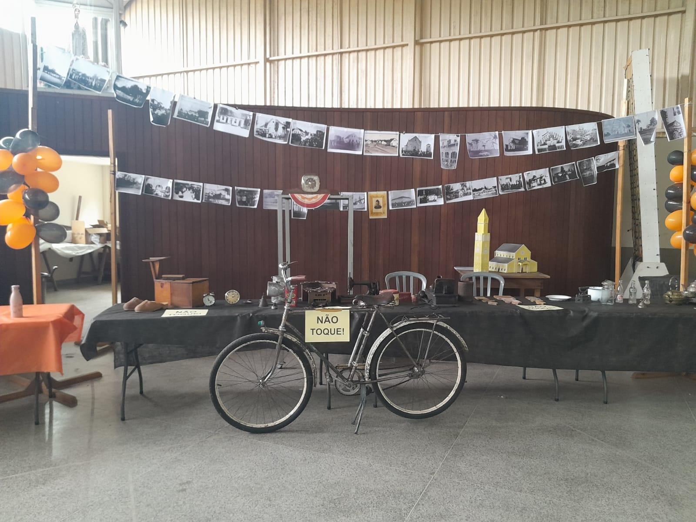
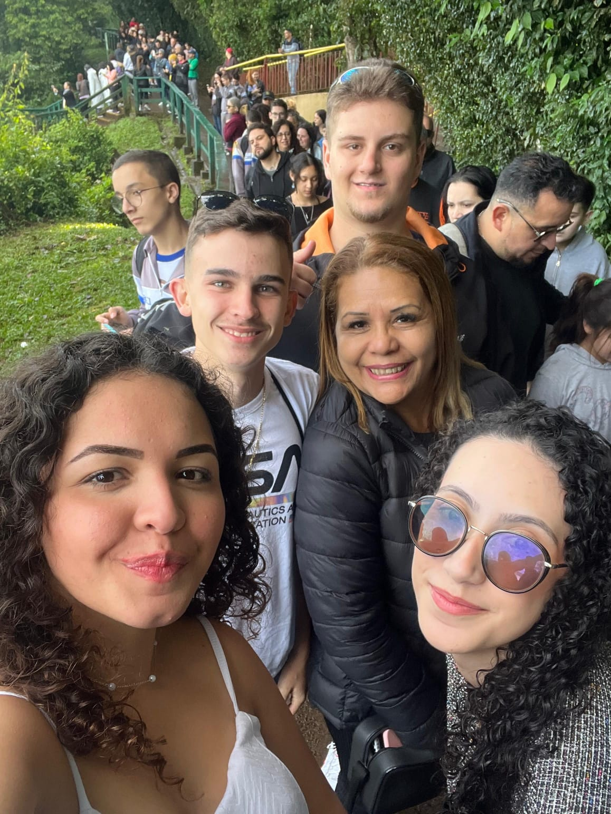
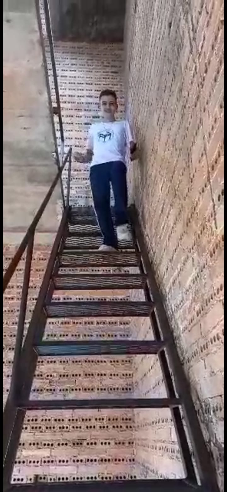

Ensino-Médio
Feira Fenaahs Neste dia fui para a fenaahs, em foz do Iguaçu, foi uma experiência inesquecível, e ótima para meu aprendizado

Feira de antiguidades Esse dia foi muito especial, realizei essa feira no colégio morelli no fim do ano de 2023, fiz a exposição de muitas coisas antigas, foi muito legal
Passeio cataratas Esse passeio foi nas cataratas do Iguaçu, um pouco antes de começar a feira, foi muito legal! .
2 ano
Subida torre Esse dia foi muito divertido, foi o Dia em que subimos na torre da igreja de São Pedro, foi uma experiência inesquecível
